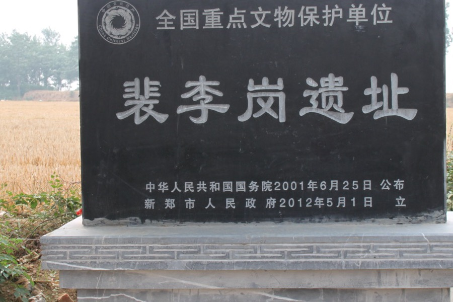
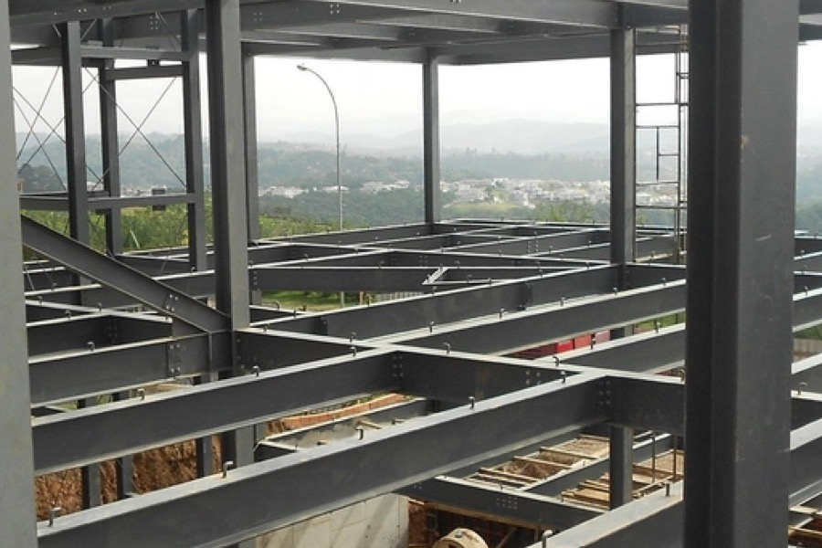
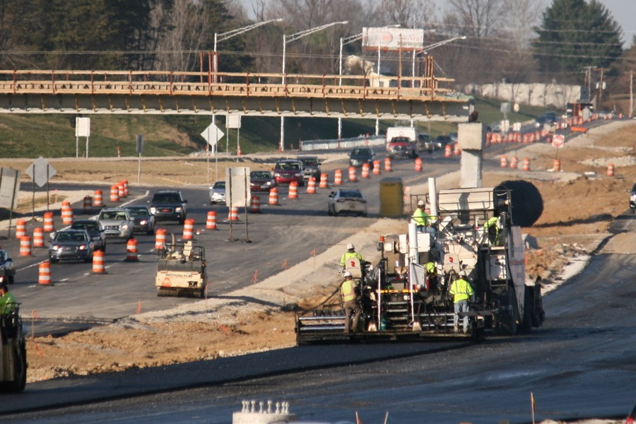

The problem
The site fell eleven metres across its length and had been backfilled without record after the colliery closed. The client's ground investigation was three years old and covered the northern half only.
Our buildability review flagged that the drainage strategy in the tender documents relied on a gravity outfall that the levels would not support once the retained cut was set out properly. We priced the compliant scheme and an alternative with a single pumping station.
What we did
- 62,000 m³ cut and fill, balanced on site with no muck-away off the northern phases
- Dynamic compaction across the backfilled zone, with plate testing on a 20m grid
- 2.4 km of foul and surface water drainage, adopted under Section 104
- One pumping station and 1,100 m³ of attenuation, replacing the tendered gravity outfall
- Estate roads and turning heads to Section 38, phased around occupied plots
Outcome
The alternative drainage strategy took £180,000 out of the scheme and six weeks off the critical path. Phase one plots were handed over two weeks early; the remaining three phases each landed on programme.
Zero RIDDOR-reportable incidents across 74 weeks and 41,000 operative hours. Considerate Constructors score of 42 out of 45.
Project facts